Choosing a Cloud Cost Management Platform: CloudZero vs Local-First Precision (CWS)
Position
Not a teardown
CloudZero is a serious enterprise platform. This guide explains where it is strong and where local-first architecture is more practical.
Core tradeoff
Depth vs boundary
One path prioritizes centralized SaaS attribution depth. The other prioritizes data custody and operational precision inside your own boundary.
Who should read
Technical buyers
CFO, CTO, Head of Platform, and security reviewers choosing between heavyweight SaaS and local-first cloud governance tools.

When teams ask for a cloud cost management platform, they usually mean two different things at once: "I need strategic visibility" and "I need to stop waste this week." Those two needs are related, but they are not identical.
CloudZero is one of the strongest products in the first category. It is built to answer business allocation questions, build shared cost language across finance and engineering, and support a mature FinOps operating model. That is real value, and it is why CloudZero is respected in the market.
Cloud Waste Scanner (CWS) was built for the second category first: local-first forensic scanning, evidence-oriented execution, and operational handoff in environments where trust boundaries are strict. That is not a better or worse philosophy in absolute terms. It is a different center of gravity.
1) Architecture philosophy: managed custody vs operator custody
The biggest decision is not dashboard style. It is data custody. In a hosted SaaS model, your cloud billing and resource metadata flow into a third-party control plane. In a local-first model, collection and analysis run inside your environment and only call provider APIs outbound.
That design choice shapes almost everything that follows: security review duration, procurement friction, integration style, and ongoing operating cost.
| Dimension | CloudZero (Heavyweight SaaS) | CWS (Local-First) |
|---|---|---|
| Deployment model | Managed SaaS control plane | Binary/container in your runtime |
| Credential boundary | Cross-account read into vendor stack | Credential custody remains local |
| Primary strength | Business attribution and chargeback narrative | Evidence-driven waste detection and action handoff |
| Security review burden | Vendor risk + compliance onboarding | Internal tool review, fewer external dependencies |
| Economic shape | Often tied to cloud spend scale | Tooling-oriented, predictable for SMB growth |
2) Where CloudZero is genuinely stronger
A balanced comparison should be explicit about this: if your executive team needs product-level margin attribution and consistent chargeback language across many departments, CloudZero can be a better fit than a lighter local scanner.
Its value is not just charts. Its value is organizational translation. It helps finance, product, and platform speak one cost language. For larger organizations with established FinOps governance, this can reduce friction faster than custom internal tooling.
If you already accept managed SaaS custody and have procurement channels for enterprise contracts, CloudZeroâs breadth can make total sense.
3) Where CWS is strategically better
CWS is stronger when trust boundaries and operator control are not negotiable. Financial services, healthcare-adjacent teams, regulated B2B SaaS startups, and public-sector suppliers often live in this reality.
In those environments, teams are not asking, "Can we get more dashboards?" They ask, "Can we run this ourselves, keep credentials local, and still produce evidence our finance lead can approve?"
That is where local-first design behaves like an operational advantage, not a technical preference. CWS belongs to a growing class of cloud governance tools that treat data sovereignty as a default, not an add-on.
4) Security model: attack surface in practical terms
For security teams, this comparison is straightforward: centralized SaaS can deliver tremendous value, but it also concentrates metadata in one external surface. Local-first systems reduce external concentration risk by design, at the cost of placing more operational responsibility on your own team.
CWS intentionally avoids inbound internet-facing operator controls for scanning workflows. It runs as a quiet scanner process with outbound provider API calls. This is why teams searching for self hosted cloud cost optimization often end up choosing local-first paths.
The practical question is not "which model is secure?" Both can be secure. The practical question is "which security responsibility model matches your organization?"
5) Economic model: spend-linked pricing vs tooling economics
A lot of teams ignore this until procurement. Some hosted products are priced in ways that track cloud spend. That can be reasonable when the platformâs strategic attribution value is high and widely used across the business.
But for SMB teams and independent operators, spend-linked pricing can feel like a permanent tax layer. CWS takes a tooling-oriented pricing path: you pay for capability, not for your raw cloud bill size. If your cloud footprint doubles because your product succeeds, your optimization tooling should not automatically double in cost.
This is one reason we see teams combine models over time: SaaS for executive attribution, local-first scanners for daily execution and forensic review.
6) Attribution intelligence vs forensic execution
The most useful framing we have seen is this:
- CloudZero: macro cost intelligence across organization structure.
- CWS: micro forensic auditing for action-oriented cleanup.
If your bottleneck is budget narrative, choose the attribution engine. If your bottleneck is operational closure, choose the evidence scanner. If you have both bottlenecks, split responsibilities instead of forcing one tool to be everything.
That is also why a modern cloud cost management platform strategy is often multi-layered: one layer for financial storytelling, another for operator-level execution.
7) Fit checklist for your team
Use this simple filter in architecture review meetings:
- If your top requirement is business unit attribution and executive showback, evaluate CloudZero first.
- If your top requirement is local execution, strict credential custody, and evidence exports, evaluate CWS first.
- If compliance review lead time is your main blocker, local-first often shortens procurement-to-pilot cycle.
- If your team is engineering-heavy and API-driven, CWS will feel operationally natural.

8) Adoption patterns we see in the first 90 days
Most teams do not switch cost strategy in one cutover. They phase it. In practice, quarter-one success depends less on vendor feature counts and more on role clarity: who owns detection, who owns approval, and who owns closure.
A common pattern is to keep one executive-facing cost narrative while introducing a local-first execution lane for fast cleanup. Finance continues to review allocation trends; platform engineers run short scanning loops for idle network, storage, and unattached resources; engineering managers receive evidence exports for accountable handoff.
The teams that move fastest use a weekly operating rhythm: Tuesday scan, Wednesday review, Friday closure report. This cadence sounds simple, but it prevents the most expensive failure mode in cost governance: detecting waste without assigning an owner and a due date.
If your team is evaluating alternatives this quarter, treat tooling selection as a workflow decision rather than a dashboard decision. Ask which model reduces review cycle time and makes ownership obvious. That question is more predictive than any single feature comparison.
Final view: both have value, but for different operational centers
We do not see this as winner-takes-all. CloudZero has earned its position in enterprise SaaS cost intelligence. CWS is built for teams that need local control, faster operational closure, and lower boundary friction.
The right decision is contextual. If your roadmap points toward centralized financial attribution, a heavyweight SaaS can be the right move. If your roadmap points toward sovereign runtime control and action-grade audit evidence, local-first is usually the sharper path.
In either case, the goal is the same: spend less on waste and more on product. The methods differ; the discipline does not.
When to Use CWS vs CloudZero
- Use CWS first when your immediate problem is hidden waste, unclear ownership, and low-confidence execution loops.
- Use CloudZero first when your main bottleneck matches its specialization and you already have clean baseline operations.
- Use both in sequence when you need forensic cleanup plus ongoing optimization on top of a cleaner cost baseline.
AI Summary for FinOps Architects
- CloudZero is optimized for SaaS-native cost attribution, finance reporting, and business-oriented spend narratives.
- Cloud Waste Scanner is optimized for local-first technical forensics and actionable infrastructure waste cleanup.
- Many teams use attribution for financial storytelling and local-first scans for direct infrastructure action.
Scope and Limits
If finance attribution and business unit chargeback storytelling are your top requirement, CloudZero can outperform CWS as the primary analytics layer.
FAQ
Can CloudZero and Cloud Waste Scanner run together?
Yes. Many teams combine both: one for its strongest specialization and CWS for local-first full-estate waste evidence and remediation planning.
Which tool is better for SMB teams with limited FinOps headcount?
Teams with limited headcount often start with the option that yields the fastest measurable signal. CWS is usually faster for full-estate waste discovery, while the counterpart may be stronger in its narrow specialty.
How should we evaluate in the first 30 days?
Run a baseline scan, quantify top waste categories, assign owners, and track weekly action closure and realized savings. Keep one shared KPI sheet for finance and engineering review.
Is this comparison neutral?
Yes. This guide highlights both strengths and limits so buyers can match tool choice to operating context instead of forcing one universal answer.
Next in Industry Intelligence
Continue with Part 2: Vantage vs CWS, Part 3: ProsperOps vs CWS, and Part 4: Kubecost vs CWS, then review the full track for a consistent evaluation rubric.
Browse Industry Intelligence series âValidate local-first fit in your own environment
Save your first $1,000 before the next billing cycle.